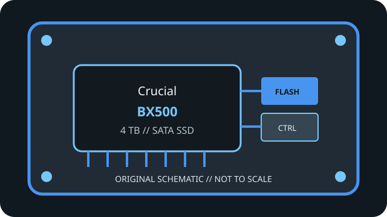

[ INDIVIDUAL COMPONENT // SATA SOLID-STATE DRIVE ]
Crucial BX500 4 TB
Model-specific record for manufacturer SKU CT4000BX500SSD1. See linked manufacturer documentation for rated values and revision details.

IDENTIFICATION: Confirm full SKU CT4000BX500SSD1, capacity, package-region suffix and hardware revision against the physical label; do not assume same-family variants share internals.
Specifications
| Manufacturer / model | Crucial BX500 4 TB |
|---|---|
| Full manufacturer SKU | CT4000BX500SSD1 |
| Capacity | 4 TB |
| Form factor / height | 2.5-inch SATA, 7 mm (check physical clearance and the manufacturer’s exact package/revision documentation). |
| Interface / limit | SATA III / SATA 6 Gb/s signaling. Protocol overhead and negotiated host link speed limit payload throughput; M.2 SATA, mSATA and NVMe are not interchangeable connectors/protocols. |
| Controller, NAND, endurance & performance | Crucial identifies this as a 4 TB, 2.5-inch SATA SSD. The linked manufacturer product and support pages do not provide a controller, NAND-generation, endurance/TBW or capacity-specific peak-performance value, so those are deliberately left unspecified rather than inferred from another capacity/revision. SATA 6 Gb/s is the interface ceiling. |
| Host compatibility | For a PC/laptop with a 2.5-inch bay or suitable mounting and a SATA data connector plus SATA power. SATA backward compatibility depends on host implementation; check BIOS/UEFI, operating-system and boot support, connector clearance and required capacity support. TRIM/SMART requires suitable OS, driver and ATA pass-through support; some USB bridges/RAID modes do not pass commands. |
Archival, health & service notes
- Record label, serial, firmware, SMART/health snapshot, host/controller, date and source revision; a family name alone is not enough to identify a revision.
- Advertised maxima and TBW are manufacturer ratings, not a guarantee of speed or service life in a particular workload.
- Keep verified backups and periodic integrity checks; an SSD is not a substitute for multiple independent archival copies.
Manufacturer sources
- Crucial BX500 4 TB product pageManufacturer page identifying the 4 TB BX500 SKU and form factor.
- Crucial BX500 support & firmwareManufacturer family support and firmware resource.